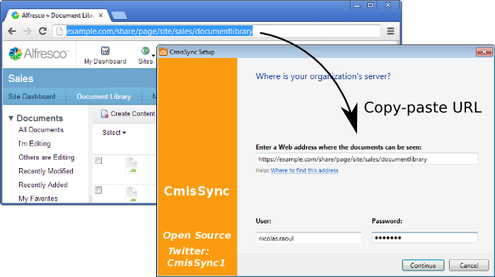

CmisSyncを使うと、あなたの社内Alfrescoと同期ができます。
オフラインでも、文書の閲覧と編集ができます：
ステップ1
まず.NET、次にCmisSyncを、インストールしましょう。
ステップ2
CmisSyncを実行しましょう。
チュートリアル画面が終わったら、タスクトレイのアイコンにCmisSyncが追加されています：
アイコンをクリックして、「リモートフォルダを追加...」を選択しましょう。
ステップ3
表示された画面の「URL」フィールドに、AlfrescoサーバーのURLを入力しましょう（ウェブ上でAlfrescoの文書を見るときのURLです）：

プロトコル（http://やhttps://）の部分も必要です。
ユーザー名とパスワードも入力してください。
ステップ4
「次」を押すと、Alfrescoのフォルダーのリストが表示されます。
同期したいフォルダーを選択してください。
とくにAlfresco Shareの場合は、「Sites」をクリックして、同期したいSiteを選び、その「documentLibrary」を選択してください。
もう使えます！
これから、CmisSyncはAlfrescoとあなたのパソコンを同期します。
CmisSyncはファイルの編集・追加を双方向で行えます。
もしもファイルのコンフリクトが発生したときは、警告が出て、2つのバージョンがバックアップされるので、後でマージすることができます。